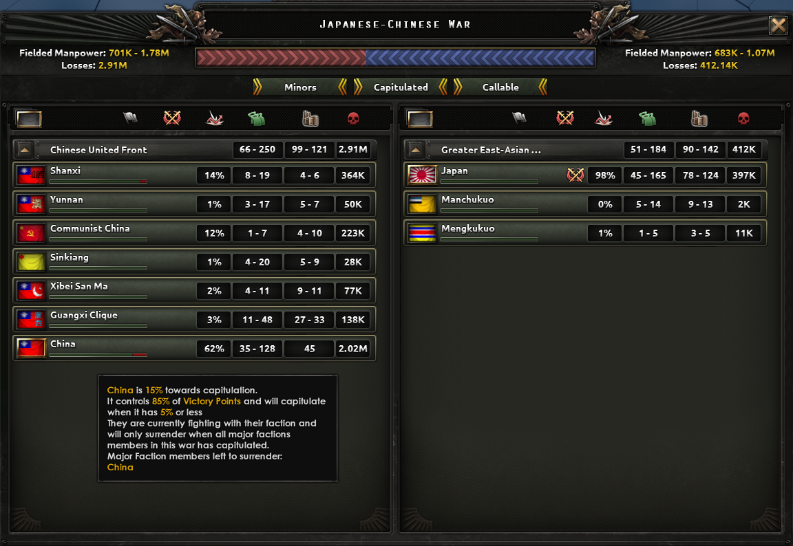
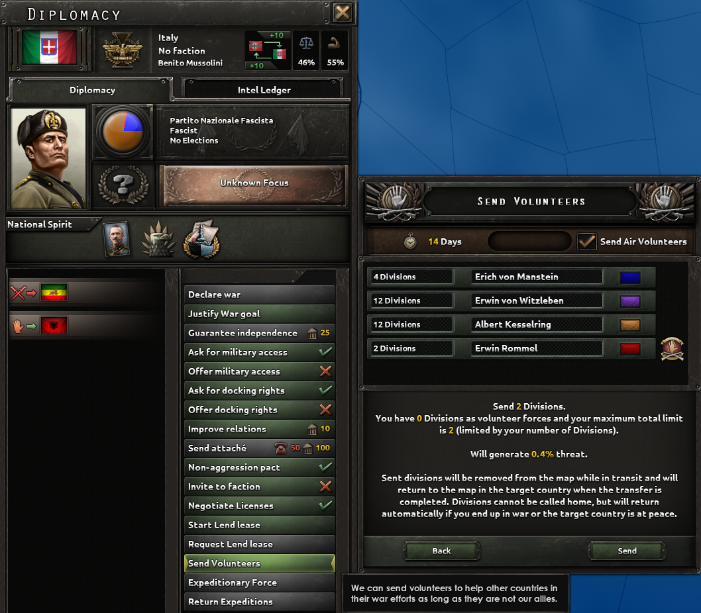
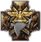
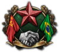
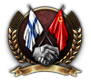
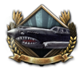

战争
原页面：Warfare
陆战
- 主条目：陆战
陆战由师执行，师下再分为旅。各师共同组成集团军，可由一名指挥官指挥。每位指挥官可在不受惩罚的情况下指挥 24 个师（使用区域防御命令，时为 72 个，拥有“熟练参谋”特质时为 30 个）。陆军元帅可在不受惩罚的情况下指挥五个集团军，拥有“专家授权者”特质时最多可指挥七个。相应的地图模式可通过右下角的按钮或 F1 快捷键打开。
- 主条目：海战
海战由编成特遣舰队、再编成舰队的舰船执行，它们可以在某个海军战略区域内争夺制海权，也可以打断敌方运输船队的活动并保护友方运输船队的活动。舰队由海军上将指挥，后者可根据军衔与技能提供加成。
空战
- 主条目：空战
空战由包含飞机的航空队执行，它们可以在某个战略区域内与敌方争夺制空权、轰炸敌方工厂、机场和基础设施、为陆军师提供近距空中支援，并攻击停泊中或正在执行任务的舰船。航空队不由指挥官指挥，但可能产生技艺高超的飞行员，即王牌，他们可以提供加成。
投降与战败

当交战国失去控制的、其自有核心领土上的胜利点多于其投降阈值时，就会发生投降。该阈值默认为80%，但战争支持度低于 50% 会将其最多降低-30%，建立合作政府（需要抵抗运动 DLC）也能将投降阈值最多降低-30%。某些国家精神 也会影响投降阈值，其中最著名的是法国的“政府分裂”国家精神（-50%）。投降阈值通常不能低于20%，唯一的例外是日本在失去冲绳和硫磺岛、舰船少于 40 艘、并遭到两枚核弹打击时。
也会影响投降阈值，其中最著名的是法国的“政府分裂”国家精神（-50%）。投降阈值通常不能低于20%，唯一的例外是日本在失去冲绳和硫磺岛、舰船少于 40 艘、并遭到两枚核弹打击时。
当一国越过投降阈值时，它会向对其取得最高战争贡献分（见下文）的国家投降。如果敌方占领了首都，在此项判定中他们会获得50%加成和额外的150战争贡献分。投降国会失去所有与其首都相连的自有省份及那里的全部部队的控制权。若有盟军部队驻守，他们必须穿过现在由敌方控制的土地撤退。
投降并不一定意味着该国立即战败。如果该国与主要盟友并肩作战，那么直到这些盟友被击败战争才会结束。即使已经投降，各国也不会在战争开始后不到七天就退出战争，以便有时间为此加入阵营。反过来，次要国家可能在其所有主要盟友投降后被迫投降，即使它们本身并未陷落。
赢得战争的国家将获得投降国装备储备和陆军单位的 50%。
战争贡献
- 主条目：战争参与度
战争贡献衡量一国对战争的贡献，并用于计算和平会议中使用的战争贡献分。
和平会议
- 主条目：和平会议
当一场战争结束、所有敌国均被击败时，就会召开和平会议。
志愿军与远征军
志愿军与远征军是派遣士兵参战的方式：既可以不参与该战争本身，也可以向交战中的盟友派兵援助。
志愿军

派遣陆军师或航空队作为志愿军，是一国在不加入战争的情况下向他国战争派遣陆、空力量的方式。这是在大型战争爆发前的数年间获取经验的绝佳途径，也能让一国在不卷入外交的情况下影响战争走向。玩家还可以用志愿军在实战条件下检验师编制。志愿军由派遣国而非受援国控制、补给和补充。每派遣一个师，世界紧张度增加.02。
一国只有在自身不处于战争状态时才能向国外派遣志愿军。在任何一场冲突中，它只能选择支援其中一方。可作为志愿军接收的师数按每个受援国分别计算。派遣志愿军的能力受意识形态和世界紧张度限制——法西斯国家随时都可以这样做，而另一个极端的民主国家则相当受限。法国则能更早获得这一能力。
要派遣志愿军师，必须先把它们编成集团军。可以为其指派一名指挥官，后者也能获得经验与特质（抵达之前或之后均可）。随后通过“派遣志愿军”外交行动将其派出。集团军抵达后，会为玩家创建一个新的战区，志愿军群会自动加入其中。集团军无法在这些特殊战区之间调入或调出，即使其他国家的志愿军来自同一来源也一样。志愿军部队前往受援国或返回需要14 天。如果其本国进入战争状态，或接收它们的国家进入和平状态，它们就会返回本土。志愿军返回时会带回其装备的95%，其余则丢失（“在途”或“留在目的地国”）。志愿军师也可以解散，这会把人力与装备返还派遣国，但需要重新组建并训练一个新的师来替代被解散的那个。
可部署的师数为每 20 个师可派 1 个师（向下取整，因此 19 个或更少时无法派遣志愿军）。例如 176 个现役师意味着可以派 8 个师，而 181 个则意味着可以派 9 个师作为志愿军。请注意，只有 1 个营的师与拥有 25 个营的师在此计算中同样计入。最低 20 个含 1 个步兵营的师即可派遣 1 个志愿军师。派遣国必须至少拥有至少需要30个师才能派遣志愿军。在此基础上再加上目的地国每20个省份可接收一个师。。
空军志愿军
志愿航空队受到类似限制。不过，它们是通过空军界面直接调往目的地国的机场来派遣的，之后玩家可以照常为其设定命令。
可作为志愿军派遣的飞机数量为每拥有 100 架可派 20 架（含储备），且在目的地国为每级空军基地可派 20 架。例如，拥有 1000 架飞机（已部署加储备）时，如果目的地国有 10 级空军基地，你最多可派遣 200 架飞机作为志愿军。若他们有 2 级空军基地和 3 级空军基地，合计按 5 级计算，那么无论你拥有多少架，都只能派遣 100 架。必须能够派遣陆军志愿军才能派遣空军志愿军，但无需真的派出师。
与志愿军相关的焦点
 阿富汗
阿富汗
 请求苏联援助 设定规则：可派遣志愿军
请求苏联援助 设定规则：可派遣志愿军
 支援亚洲苏联 设定规则：可派遣志愿军
支援亚洲苏联 设定规则：可派遣志愿军 保持中立
保持中立- 请求德国支援
- 请求日本支援
- 组建突厥斯坦军团
 与布拉灰汗国结盟
与布拉灰汗国结盟
 阿根廷
阿根廷
 支援西班牙共和派
支援西班牙共和派 社会主义志愿军 设定规则：可派遣志愿军
社会主义志愿军 设定规则：可派遣志愿军 和平堡垒 设定规则：可派遣志愿军
和平堡垒 设定规则：可派遣志愿军 阿根廷优先 设定规则：可派遣志愿军
阿根廷优先 设定规则：可派遣志愿军- 支援西班牙政变
 奥萨与非洲之角各国
奥萨与非洲之角各国  ［ROOT.GetAdjective］志愿军部队 设定规则：可派遣志愿军
［ROOT.GetAdjective］志愿军部队 设定规则：可派遣志愿军
 澳大利亚
澳大利亚
 公民军事力量 设定规则：可派遣志愿军
公民军事力量 设定规则：可派遣志愿军 支援印尼起义 设定规则：可派遣志愿军
支援印尼起义 设定规则：可派遣志愿军- 直接支援 设定规则：可派遣志愿军
 奥地利
奥地利
 寻求苏联支持
寻求苏联支持- 干预西班牙
- 干预西班牙
 英属印度
英属印度
- 挖角陆军人员 设定规则：可派遣志愿军
- 私人军事公司 设定规则：可派遣志愿军
 游说扩大警务职责
游说扩大警务职责- 搁置冲突
- 造王者

印度军团
- 挖角陆军人员 设定规则：可派遣志愿军
- 所有波罗的海国家
 武装波罗的海红军
武装波罗的海红军 ［Root.GetNonIdeologyName］-白俄罗斯苏维埃社会主义共和国
［Root.GetNonIdeologyName］-白俄罗斯苏维埃社会主义共和国
 比利时
比利时
- 独立、中立与忠诚
- 援助西班牙
- 维和任务 设定规则：可派遣志愿军
 比属刚果
比属刚果
- 维和部队
- 安哥拉北部人民联盟 设定规则：可派遣志愿军
 巴西
巴西

寻求苏联支持- 国际纵队 设定规则：可派遣志愿军
- 国际危机 设定规则：可派遣志愿军
 保加利亚
保加利亚
- 西班牙的斗争 设定规则：可派遣志愿军
- 支援西班牙政变 设定规则：可派遣志愿军
 加拿大自治领
加拿大自治领
 支援世界革命 设定规则：可派遣志愿军
支援世界革命 设定规则：可派遣志愿军 支持锡那基主义下加利福尼亚
支持锡那基主义下加利福尼亚
 智利
智利
 请求战争援助
请求战争援助 美洲原住民联盟 设定规则：可派遣志愿军
美洲原住民联盟 设定规则：可派遣志愿军- 向共和派派遣志愿军 设定规则：可派遣志愿军
- 支援民主国家 设定规则：可派遣志愿军
- 支援国际革命 设定规则：可派遣志愿军
 中国
中国
 传播自由之光 设定规则：可派遣志愿军
传播自由之光 设定规则：可派遣志愿军
- 所有中国军阀
 与国民党合作
与国民党合作- 与共产党合作
 印度远征军计划
印度远征军计划
 捷克斯洛伐克
捷克斯洛伐克
- 复兴捷克斯洛伐克军团 设定规则：可派遣志愿军
 干预苏联内战
干预苏联内战 空运苏联支援
空运苏联支援- 为西班牙进行国家资助招募
 组建革命旅
组建革命旅- 空军军官招募
 从西班牙内战中获利
从西班牙内战中获利
- 复兴捷克斯洛伐克军团 设定规则：可派遣志愿军
 丹麦
丹麦
 重申中立
重申中立
 埃塞俄比亚
埃塞俄比亚
 日本无政府共产主义
日本无政府共产主义- 支援西班牙 设定规则：可派遣志愿军
 芬兰
芬兰
- 红色芬兰

接近苏联- 社会主义福利
 法西斯政权
法西斯政权
 法国
法国
 法国布尔什维克志愿军联盟
法国布尔什维克志愿军联盟 走向新欧洲
走向新欧洲 防御策略 设定规则：可派遣志愿军
防御策略 设定规则：可派遣志愿军 维希法国
维希法国
 反布尔什维克志愿军
反布尔什维克志愿军
 德国
德国  支援芬兰
支援芬兰- 秃鹰军团
- 干预西班牙
- 援助我们的东方同志
- 无产阶级军团
 复兴德意志帝国 设定规则：可派遣志愿军
复兴德意志帝国 设定规则：可派遣志愿军 民主之盾 设定规则：可派遣志愿军
民主之盾 设定规则：可派遣志愿军- 远东军团
 大不列颠
大不列颠 - 不再绥靖 设定规则：可派遣志愿军
- 军事训练法 设定规则：可派遣志愿军
 国王党 设定规则：可派遣志愿军
国王党 设定规则：可派遣志愿军
 希腊
希腊
- 梅塔克萨斯主义
 希腊精神
希腊精神
 匈牙利王国
匈牙利王国  援助卡洛斯派斗争 设定规则：可派遣志愿军
援助卡洛斯派斗争 设定规则：可派遣志愿军- 正式组建拉科西营 设定规则：可派遣志愿军
- 支援我们的芬兰兄弟 设定规则：可派遣志愿军
 冰岛
冰岛
- 国际纵队
- 宣布绝对中立
 伊朗
伊朗
 国际团结 设定规则：可派遣志愿军
国际团结 设定规则：可派遣志愿军 在中东建立保护国 设定规则：可派遣志愿军
在中东建立保护国 设定规则：可派遣志愿军
 伊拉克
伊拉克
 支援盟军作战 设定规则：可派遣志愿军
支援盟军作战 设定规则：可派遣志愿军- 自由阿拉伯军团 设定规则：可派遣志愿军
 组建阿拉伯联盟 设定规则：可派遣志愿军
组建阿拉伯联盟 设定规则：可派遣志愿军
 意大利
意大利
- 加里波第军团
- 援助西班牙共和国 设定规则：可派遣志愿军
 我们的海 设定规则：可派遣志愿军
我们的海 设定规则：可派遣志愿军- 意大利领土收复主义 设定规则：可派遣志愿军
 志愿部队军团
志愿部队军团
 日本
日本
- 抗衡共产国际 设定规则：可派遣志愿军
 指导小国 设定规则：可派遣志愿军
指导小国 设定规则：可派遣志愿军- 资助亚洲抵抗组织 设定规则：可派遣志愿军
- 批准援助埃塞俄比亚
 和田马家军
和田马家军
 苏联志愿航空队
苏联志愿航空队
 满洲国
满洲国
- 苏联援助

邀请飞虎队 人民志愿军
人民志愿军
 墨西哥
墨西哥
- 阿兹特克之鹰 设定规则：可派遣志愿军
 国际维和人员 设定规则：可派遣志愿军
国际维和人员 设定规则：可派遣志愿军 国际斗争 设定规则：可派遣志愿军
国际斗争 设定规则：可派遣志愿军
- 阿兹特克之鹰 设定规则：可派遣志愿军
 新西兰
新西兰
 2NZEF 设定规则：可派遣志愿军
2NZEF 设定规则：可派遣志愿军
 巴拉圭
巴拉圭
- 清除军队中的异见分子
 菲律宾自治邦
菲律宾自治邦 - 菲律宾西班牙裔
- 支援中国共产党 设定规则：可派遣志愿军
 波兰
波兰
- 干预焦点 设定规则：可派遣志愿军
 志愿军团
志愿军团- 支援全球长枪党主义
- 东布罗夫斯基营 设定规则：可派遣志愿军
 葡萄牙
葡萄牙
 支援西班牙共和国 设定规则：可派遣志愿军
支援西班牙共和国 设定规则：可派遣志愿军 支援西班牙国民军 设定规则：可派遣志愿军
支援西班牙国民军 设定规则：可派遣志愿军- 支援战争中的西班牙君主派 设定规则：可派遣志愿军
 罗马尼亚
罗马尼亚
 罗马尼亚志愿旅 设定规则：可派遣志愿军
罗马尼亚志愿旅 设定规则：可派遣志愿军
 西班牙
西班牙
 苏联
苏联
 瑞典
瑞典
- 瑞典志愿军团 设定规则：可派遣志愿军
- 瑞典志愿军团 设定规则：可派遣志愿军
 瑞士
瑞士
 回归旧瑞士
回归旧瑞士 志愿部队 设定规则：可派遣志愿军
志愿部队 设定规则：可派遣志愿军
 土耳其
土耳其
 世界和平
世界和平 干预西班牙内战 设定规则：可派遣志愿军
干预西班牙内战 设定规则：可派遣志愿军
 美国
美国
 有限干预
有限干预- 中立法案
- 通过中国焦点 寻求帮助 设定规则：可派遣志愿军
 乌拉圭
乌拉圭
 承认佛朗哥西班牙 设定规则：可派遣志愿军
承认佛朗哥西班牙 设定规则：可派遣志愿军
 南斯拉夫
南斯拉夫
- 强制南斯拉夫中立
- 国际纵队战士 设定规则：可派遣志愿军
- 拥有通用国策树的国家
- 军国主义 设定规则：可派遣志愿军
- 中立焦点
- 干涉主义焦点 设定规则：可派遣志愿军
 志愿军团
志愿军团- 海外远征
远征军
派遣远征军是把部队交给交战盟友的一种方式。如果玩家不想亲自指挥它们，或者 AI 想在某个战区作战并认为接收方玩家会做得更好，这种方式就很有用。远征军可以随时交出和收回。解散一个远征军师相当于将其归还。AI 在拥有可用运输船队时也常常会把它们海运过去。
远征军的装备和人力来自其本国，而不是接收国。接收国在归还之前对它们拥有完全控制权。远征军占领带来的战争贡献分归于控制它们的国家，而伤亡带来的战争贡献分归于本国（即提供远征军的国家）。但它们的日常补给由控制国提供，这意味着如果远征军的补给状况好于你，你可以用它们来缓解补给压力。（理论上，如果德国失去了运输船队而意大利没有，德国可以把非洲军团的控制权交给意大利，以利用意大利尚可运转的补给。）
远征军的师可以获得经验，但接收国不能修改其师编制。接收远征军的玩家可能希望向本国提供租借物资，提供其可用于补给远征军的装备类型。
玩家可以通过在屏幕底部新建集团军的空肖像下方按钮，为远征军创建一个空的集团军来请求远征军。你需要为该集团军创建一个命令（例如一条前线），AI 才会考虑接受你的请求。
由 A 国提供给 B 国的师会保留 A 国军事参谋所提供的国家加成。军事参谋包括最高统帅部和陆军总参谋长。B 国的军事参谋加成不会作用于借给 B 国的 A 国远征军。
其他一些有待调查与测试的公开议题包括：远征军在战斗或军事演习中产生的陆军经验如何分配，以及本国修改师编制对人力与装备的影响。
战争目标
- 主条目：战争目标
宣战需要先确立战争目标。战争目标通常被定义为达成某种期望的事态。
为战争目标正名需要花费政治点数、加剧全球紧张度，而且通常需要六到九个月才能完成。一旦一国确立了战争目标，它就可以对指定目标国开战。成功实现战争目标的国家在和平会议中获得明显优势。若干国家利益可能成为发动战争的动力。不过，一国也完全可以追求并非基于历史先例的战争目标，例如瑞典公开表示要恢复其历史疆界。战争目标所指向的州可以在和平会议上以较低代价获取。此外还可以宣布边境战争。
经正名的常规宣战理由在其完成后两个月内有效。
领土控制
省份控制
当与当前控制者交战的国家第一个师进入某省份、且该省没有防守方时，该省的控制权就会改变。这通常发生在进攻方赢得战斗之后，或该省本来就没有防守。师可以从相邻陆地省份、经空降或海军登陆进入。控制权可能转给任何符合条件的国家，但须遵守以下规则。符合条件是指该国与原来的省份控制者处于战争状态，并已向该师所属国家提供军事通行权——无论是明确给予，还是同属一个阵营。
符合条件的国家的主张可按强度从高到低分类：
- 拥有该省所在的州
- 对该州拥有核心主张
- 对该州拥有通用主张
主张最强的国家获得控制权。多个国家主张类型相同时，按以下方式打破平局：
- 如果该师所属国家在其中，且它控制的相邻省份多于其他并列国家，则由它获得控制权
- 否则由民用工业规模最大的候选国获得控制权
如果没有符合条件的国家对之拥有主张：
- 由控制相邻省份最多的符合条件国家获得控制权（并列时按民用工业规模决定）
- 否则由该师所属国家获得控制权
除“相邻省份”规则外，在所有情况下若被选中的国家是附属国，控制权都会转给其宗主国。
州控制权
当所有者完全失去对某州的控制（即失去最后一个省份），且新的控制者同时控制着一个相邻州时，后者就获得该州的完全控制权。否则会检查周边各州的控制者中是否有新控制者的同阵营参战成员。若找到，该州会移交给其中工业规模最大者，并对阵营领袖略有加成。
同一阵营的成员可以通过“移交州控制权”和“请求州控制权”外交行动彼此显式移交州的控制权。AI 盟友通常只有在认为自己控制的州份额足够大、且对方份额不太大时才会同意。
教学视频
参考资料
| 政治 | 意识形态 • 阵营 • 国策 • 理念 • 政府 • 傀儡国 • 流亡政府 • 外交 • 世界紧张度 • 内战 • 占领 • 力量均势 |
| 生产 | 贸易 • 生产 • 建造 • 装备 • 燃料 • 军工组织 • 国际市场 |
| 科研与科技 | 科研 • 步兵科技 • 支援连科技 • 装甲科技（也包括 未拥有绝不后退）• 火炮科技 • 陆军学说 • 特种部队学说 • 海军科技（也包括 未拥有全民持枪）• 海军支援科技 • 海军学说 • 空军科技（也包括 未拥有以血盟誓）• 空军学说 • Engineering科技 • Industry科技 • 特殊项目 • 科学家 |
| 军事与战争 | 战争 • 和平会议 • 陆军单位 • 陆战 • 师编制设计 • 坦克设计 • 陆军编制器 • 集团军 • 指挥官 • 作战计划 • 战斗战术 • 舰船 • 舰船设计 (伦敦海军条约) • 海战 • 飞机设计 • 空战 • 经验 • 军官团 • 损耗与事故 • 后勤 • 人力 • 核弹 • 突袭 |
| 间谍活动 | 情报 • 情报机构 • 特工 • 任务 • 行动 |
| 地图 | 地图 • 省份 • 地形 • 天气 • 州 |
| 事件与决议 | 事件 • 决议 |